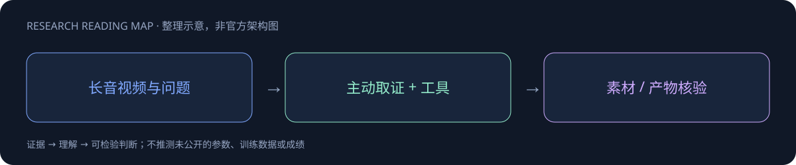

ω BrainHao · Research Atlas
📚 源笔记：Qwen3.8-Omni-Flash
2026-09-18 · Omni
Qwen3.8-Omni-Flash
原生全模态 Agent，面向音视频理解、工具计划和创作任务交付。
正式发布：2026-09-18
音频、视频与工具工作流
报告：arXiv 2609.25611

核心理解
模型从音视频理解延伸到规划与创作交付，评测单位因此应从单轮识别转向完整任务。官方博客直抓为空壳，当前笔记仅覆盖已核实发布定位，完整训练与结果待报告源码精读。
值得做的实验
测试音视频摘要的时间戳和来源引用，再测工具编排到最终文件的完整链。工具成功率、音视频事实误读和任务完成状态必须分别统计。
证据与验收边界
只使用已取得的官方资料。不把不同harness、数据子集、推理预算或服务SKU当作同口径横评；确切发布日期未证实的节点单列待核实。
本Poster是研究研读摘要，不是完整技术报告或已复现实验。全文笔记显著标明资料不足、未读报告和归档缺口，请以其证据边界为准。
📖 阅读完整渲染笔记[S1] Tech Blog
[S2] Tech Report